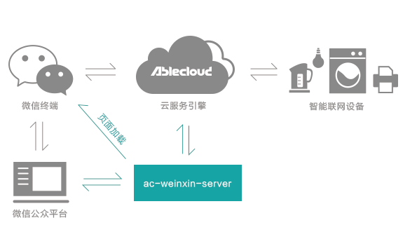
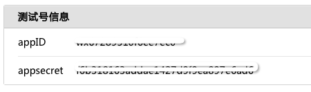
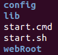
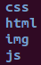
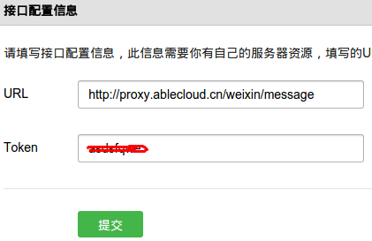

架构框图
AbleCloud实现的和微信云端对接，其架构如下：

在整个架构中，厂商的公众号开发人员只需要根据厂商自己的需求，扩展高亮部分ac-weixin-server的功能开发便可，图中其它模块不用太关注。
功能列表
整个ac-weixin-server的主要功能提供http服务器功能，提供如下几个功能：
- 提供web application：提供静态网页、js、资源的web服务功能。
- 处理公众平台的验证请求：对微信公众平台发过来的公众号提供验证。
- 用户OAuth认证：目前提供了scope为snsapi_base的oauth认证功能。
- 公众号access token的管理：提供公众号access token的获取以及刷新功能。
- 提供servlet handler：提供对微信公众平台推送的各类消息进行动态处理功能。
- 其它实用工具类接口：提供HttpUtil，能方便的发送GET、POST请求等。
框架说明
由于ac-weixin-server进行了高度的抽象，厂商只需要继承抽象类ACMPService，实现处理函数即可。通常情况下，在函数handleMsg内部，根据已经解析好的参数reqMap中的MsgType，做出不同的处理逻辑，具体请参见后面的demo。
主体框架类
public abstract class ACMPService {
/**
* 厂商为了开发自己的公众号，只需要实现该抽象方法即可。
*
* @param reqMap 已经由框架解析成key-value对的req
* @param req 原生req，如果无特殊需求，通常情况下可以不使用该参数，直接用第一个参数reqMap即可
* @param resp 处理请求后的response
* @return String 返回微信公众平台要求的xml文档格式字符串，可参考ACDefaultMPService的代码。
* @throws Exception
*/
public abstract String handleMsg(Map<String, String> reqMap,
HttpServletRequest req,
HttpServletResponse resp) throws Exception;
}
access token获取
ac-weixin-server提供了公众号access token的管理功能，在您开发公众号的过程，如果需要用到access token，只需调用utils包中AccessTokenKeeper的静态方法getTokenStr即可拿到公众号的access token，不用关注繁琐的获取、刷新过程。
public class AccessTokenKeeper {
public static String getTokenStr();
}
HttpUtil
为了方便主动向微信公众平台发送消息，封装了这个实用工具类：
public class HttpUtil {
/**
* 发送基本的GET请求
*
* @param url 目的地址url
* @return String GET请求返回结果content
*/
public static String executeGet(String url);
/**
* 发送GET请求
*
* @param url 目的地址url，该url的pattern中带有ACCESS_TOKEN，
* 在该函数内部会通过AccessTokenKeeper获取正确的token替换，
* 然后调用executeGet执行GET请求。
*/
public static String doGet(String url);
/**
* 发送基本的POST请求
*
* @param url 目的地址url
* @param body POST请求内容
* @return String POST请求返回结果
*/
public static String executePost(String url, String body);
/**
* 发送POST请求
* @param url 目的地址url，该url的pattern中带有ACCESS_TOKEN，
* 在该函数内部会通过AccessTokenKeeper获取正确的token替换，
* 然后调用executeGet执行GET请求。
*/
public static String doPost(String url, String body);
}
开发流程
基于ac-weixin-server开发厂商自己的公众号服务，除了不用关注硬件和微信交互细节外，我们还提供了常规公众号开发的基础封装，如access token管理，微信公众平台推送过来的消息解析等功能。因此厂商开发自己的公众号将变得更加简单。
1、申请微信公众号
由于公众号属于各个厂商，因此，申请公众号这个步骤由厂商完成。申请好后，会拿到微信公众平台分配的appID和appsecret，如下图所示：

2、准备服务器
当前，AbleCloud暂时还未提供主机代理服务，因此需要厂商准备机器，并配置外网ip，最好申请一个域名。该服务器用来运行ac-weixin-server。由于微信方的要求，现在该后台服务只能使用80端口。
注：后续AbleCloud提供主机代理服务后，厂商无需再准备服务器，厂商的公众号后台
ac-weixin-server服务也运行在AbleCloud的云端。
3、扩展ac-weixin-server功能
ac-weixin-server的发布库目录结构如下：

config目录下存放配置文件，lib目录下存放所有的jar文件，包括ac-weixin-server框架及其依赖包，继承ACMPService，开发实现自己的handleMsg编译成功后，也放入lib目录即可。start.cmd用于windows平台启动服务，start.sh用于linux平台启动服务。这里解释下webRoot目录，该目录用来存放公众号所需的html页面及其它静态资源，其结构大致如下：

4、编写html页面
在webRoot目录下，编写您所需的网页html或h5页面，如果要和已经接入AbleCloud平台的设备进行控制等功能，请在html页面中调用js目录下AbleCloud提供ac.js，该jssdk提供了和AbleCloud云端交互所需的丰富接口，具体参见jssdk手册。 当然，您可以为您的公众号编写除硬件相关页面之外的其它任意html页面。
5、修改配置文件
config目录下配置文件config.properties完整配置项如下，需要注意的是，配置项token后面在微信公众号接口配置信息时要用到。
app_id = wx37200xxxxxxxxxxxxxxxx
app_secret = a58001xxxxxxxxxxxxxxxxxxxxxxxxx
token = xxxxxx
host = 127.0.0.1
major_domain = testwx
sub_domain = demo
developer_id = 2
access_key = 5a11d05exxxxxxxxxxxxxxxxxxxxxxxx
secret_key = 61a5edd9xxxxxxxxxxxxxxxxxxxxxxxx
router_addr = "proxy.ablecloud.cn:5000"
account_service = zc-account
account_version = 1
device_service = zc-device
device_version = 1
redirect_url_after_airkiss = http://proxy.ablecloud.cn/html/devices.html
weixin_mp_message_handler_class = com.ablecloud.weixin.service.ACDefaultMPService
上述配置项中app_id，app_secret，token和微信公众号相关。 major_domain，sub_domain，developer_id，access_key，secret_key和AbleCloud相关，请登录AbleCloud的console查看。 weixin_mp_message_handler_class是您自定义的微信公众号核心消息处理类，继承自ACMPService。
6、部署ac-weixin-server
当开发完消息处理handler，html页面后，便可以部署整个微信公众号后台服务。我们提供了启动脚本，部署变得非常简单。
windows平台
windows下在cmd中运行如下命令启动服务
start.cmd
linux平台
linux下在终端运行如下命令启动服务
sh start.sh
真正线上启动，需要用nohup等将服务放后台，如nohup sh start.sh &,并且可能需要使用supervisor配合，防止进程异常退出。
7、修改公众号接口配置信息
在微信公众平台修改接口配置信息，如下图所示:

点击提交，正常情况下，会收到微信公众平台提示验证成功。如果验证失败，请查看log目录下的日志。
注：这里填写的token要和配置文件中的token一致。并且URL的URI部分（除去域名）必须是
/weixin/message，域名部分则是您服务器所申请的域名。
8、创建公众号菜单
根据微信公众平台的要求，创建菜单即可，这里不做详述。
注：菜单中需要创建一个VIEW类型的菜单，用来激活设备之用，该菜单url的URI部分必须是
/weixin/airkiss，域名部分则是您服务器所申请的域名。